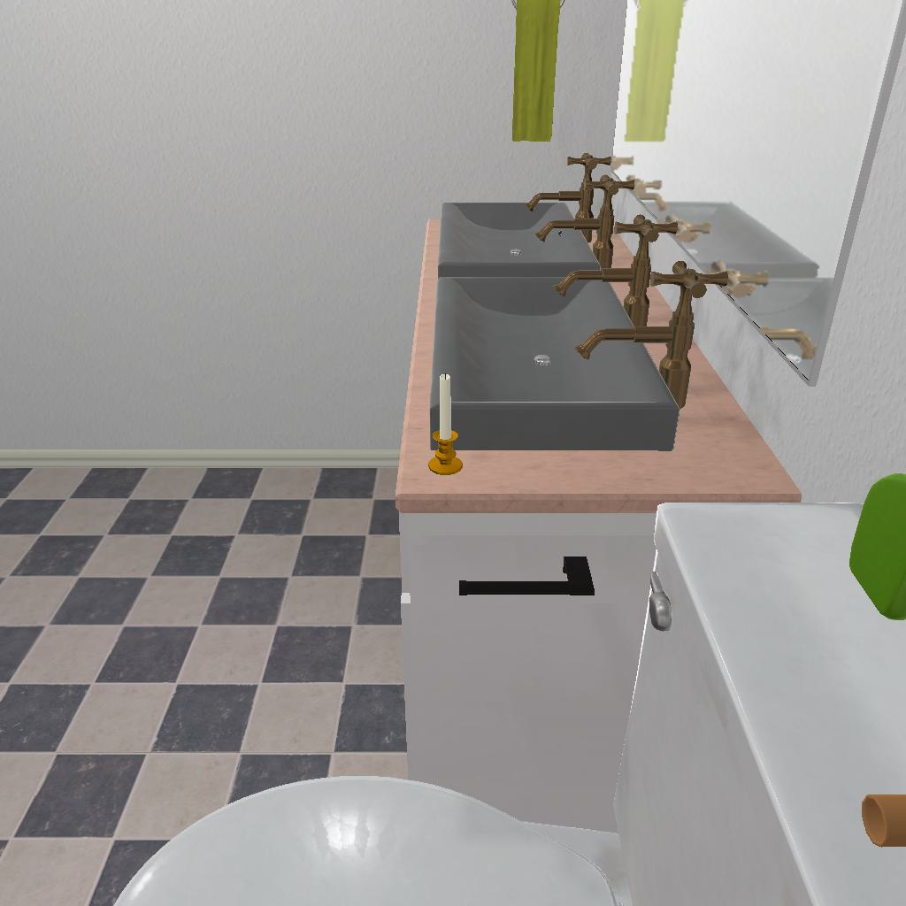

---------------------------------------------------------task: 9---------------------------------------------------------
--------------------------------------------------------------------------------------------------------------------------------------------------------------------
--------------------------------------------------------------------------------------------------------------------------------------------------------------------
Step:--------------------------------------------------------------------------2-------------------------------------------------------------------------------
----------------------------------------
VLM Prompt:
Image1:
Image2:
Image3:
**Instruction**
1. Analyze the provided images to identify all visible household objects and compare the difference between images (e.h. whether the object is opened or not and taken on hand or not), focusing on those relevant to the task description "put some soapbottle on toilet."
2. Use the analysis of images and the task hint "The agent must find an object of the desired type, pick it up, find the correct location to place it, and put it down there." to answer the question: what is the most reasonable action in the choices for the task description "put some soapbottle on toilet"?
3. Decide and write the answer using the template: The answer is: (i): , where i is the real number. If there is no desired object in images, search every place based on **Initial Observation** to find the object. And if no one is exactly correct, choose a similar answer.
**Initial Observation**
You are in the middle of a room. Looking quickly around you, you can see bathtub (1), bathtubbasin (1), toilet (1), cabinet (1-4), sink (1-2), countertop (1), sinkbasin (1-2), toiletpaperhanger (1), towelholder (1), garbagecan (1), handtowelholder (1)
**Answer Choices**
(1): go to bathtub 1
(2): go to bathtubbasin 1
(3): go to toilet 1
(4): go to cabinet 2
(5): go to cabinet 3
(6): go to sink 1
(7): go to sink 2
(8): go to countertop 1
(9): go to cabinet 4
(10): go to sinkbasin 1
(11): go to sinkbasin 2
(12): go to toiletpaperhanger 1
(13): go to towelholder 1
(14): go to garbagecan 1
(15): go to handtowelholder 1
(16): open cabinet 1
(17): close cabinet 1
(18): examine cabinet 1
**Answer**
Let's think step by step by following the instructions.
----------------------------------------
----------------------------------------
Original Response:
The task is to put some soapbottle on the toilet. From the initial observation, we can infer that the soapbottle is likely to be found in cabinets near the sink as it's a common place to store such items in a bathroom.
In Image 1 and Image 2, we can see there's no soapbottle on the countertop, sinkbasins, or visible on any open cabinets. The cabinets under the sink (cabinet 1-4) are closed, which means we need to search inside them.
Image 3 gives us a view of cabinets 1 and 2 which are closed, and cabinets 3 and 4 which are opened but there's no visible soapbottle inside.
Based on this analysis, the most reasonable action to find the soapbottle would be to open the remaining unopened cabinets, which are cabinet 1 and cabinet 2, because cabinet 3 and cabinet 4 are already open and do not contain the soapbottle.
The answer is: (16): open cabinet 1
----------------------------------------
----------------------------------------
>>> Refine Original VLM Response and Get Pure Action: open cabinet 1
----------------------------------------
-----------------------------------------------------------------
Running time: 10.621820211410522 seconds
Total Money: 4.169280000000002
-----------------------------------------------------------------
-----------------------------------------------------------------
Text Observation:You open the cabinet 1. The cabinet 1 is open. In it, you see a faucet 1, a faucet 2, a candle 1, and a spraybottle 1.
-----------------------------------------------------------------
UNSUCCEED